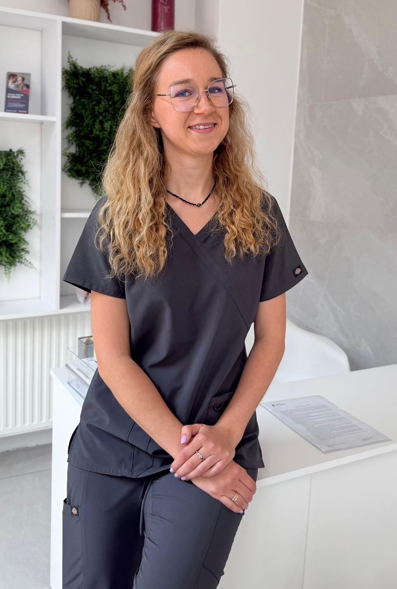

		<!-- Sidebar -->
					<div id="sidebar">
						<div class="inner">

							<section>
									<header class="major">
										<h2>Wiktoria Żak</h2>
										 <h2>Diagnosta Laboratoryjny</h2>
									</header>
									<div class="mini-posts">
										<article>
											<a href="/" class="image"></a>
												<p>Pracuję w laboratorium i wiem, że dla wielu<br/>
													z Was wyniki badań to po prostu… skróty,<br/>
													liczby i mnóstwo niewiadomych.</p>
											</article>
									</div>
							</section>
										

							<!-- Menu -->
								<nav id="menu">
									<header class="major">
										<h2>Menu</h2>
									</header>
									<ul>
										<li><a href="/">Głowna strona</a></li>
										<li><a href="O-Mnie.html">O Mnie</a></li>
										<li>
											<span class="opener">Badania</span>
											<ul>
												<li><a href="#">Dla Niego</a></li>
												<li><a href="#">Dla Niej</a></li>
												<li><a href="#">Zestawy</a></li>
											</ul>
										</li>
										<li><a href="Plodnosc.html">Płodność</a></li>
										<li>
											<span class="opener">Suplementacja</span>
											<ul>
												<li><a href="#">Dla Niego</a></li>
												<li><a href="#">Dla Niej</a></li>
												<li><a href="#">Zestawy</a></li>
											</ul>
										</li>
						<!-----					
											<span class="opener">Sklep</span>
											<ul>
												<li><a href="#">Badania</a></li>
												<li><a href="#">E-booki</a></li>
												<li><a href="#">Dla Laboratorium</a></li>
												<li><a href="#">Promocje</a></li>
											</ul>
										</li>
										<li><a href="#">Wyniki Badan</a></li>
										<li>
											<span class="opener">Laboratoria</span>
											<ul>
												<li><a href="#">Dolnośląskie</a></li>
												<li><a href="#">Kujawsko-Pomorskie</a></li>
												<li><a href="#">Lubelskie</a></li>
												<li><a href="#">Lubuskie</a></li>
												<li><a href="#">Łódzkie</a></li>
												<li><a href="#">Małopolskie</a></li>
												<li><a href="#">Mazowieckie</a></li>
												<li><a href="#">Opolskie</a></li>
												<li><a href="#">Podkarpackie</a></li>
												<li><a href="#">Podlaskie</a></li>
												<li><a href="#">Pomorskie</a></li>
												<li><a href="#">Śląskie</a></li>
												<li><a href="#">Świętokrzyskie</a></li>
												<li><a href="#">Warmińsko-Mazurskie</a></li>
												<li><a href="#">Wielkopolskie</a></li>
												<li><a href="#">Zachodniopomorskie</a></li>
											</ul>
										</li>
									----->
										<li><a href="#">Wydarzenia</a></li>
									</ul>
								</nav>

							
							<!-- Section -->
								<section>
									<header class="major">
										<h2>Porozmawiajmy o Twoich badaniach</h2>
									</header>
									<p>Każde pytanie jest ważne. Jeśli czegoś nie jesteś pewien, wyślij wiadomość, a otrzymasz odpowiedź tak szybko, jak to możliwe.</p>
									<ul class="contact">
										<li class="icon solid fa-envelope"><a href="#">kontakt@otowynik.pl</a></li>
										<li class="icon solid fa-phone">(000) 000-0000</li>
										<li class="icon solid fa-home">Katowice</li>
									</ul>
								</section>
						</div>
					</div>
